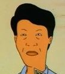
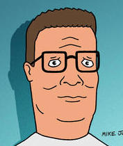

To give a little bit of background information, King of the Hill is a show about the Hill family as they deal with everyday struggles as they learn lessons from the experiences. This episode focusses on the Hills and their Laotian neighbor the Souphanousinphones. The Hills are a family of Christians while the Souphanousinphones are a family of Buddhists. One day soon after the Buddhist Lama passed, the Souphanousinphones were preparing their daughter Connie to take the test to see if she’s the next Lama and compete against another Laotian Buddhist child for that position. Bobby Hill, in an effort to give Connie the upper hand, accidentally passed the test and was deemed an unexpected candidate for the next Lama and waits for the ultimate test. Finally, during the finale of the episode, Bobby Hill learns that Lama cannot marry. Since he’s dating Connie, he chooses Connie instead of being the spiritual leader of millions. A couple of key insights are presented in the episode.
 Kahn Souphanousinphone (Connie’s father):
Sees Buddhism as nothing but a tool to gain power, connections and leverage over others. He doesn’t go out of his way to practice rituals or learn the teachings of Buddhism. As a result, Connie never got a chance to witness a true Buddhist ritual as “there’s no one for [her father] to meet” in those Buddhist communities. However, when the monks came to perform the test, he was keen to ask the monks to stay at his place. But once he has learned that his daughter will not be selected, he told the monks to set up tent in his front lawn.
 Hank Hill (Bobby’s Father):
A faithful Christian who attends church every Sunday. He interrupts Bobby’s enlightenment ritual and tells him the reason why he’s not allowed to practice Buddhism and why they go to church every Sunday is because they are Methodist Christians. But when asked what exactly Methodism is, Hank failed to provide an answer so has to visit the reverend with Bobby. The answer they got was simply that Methodism is a rejection of Calvinism. When the reverend congratulates Bobby on possibly to becoming a Lama, he tries to tell the reverend that they are on “the same team.” And refuses to believe that Bobby can be a Buddhist and love Jesus, questioning Bobby’s faith to Chrisitanity.
Bobby Hill:
Follows his father to church every Sunday but seems to not know exactly why they do it, similar to his father. But when he was led to believe that he’s the reincarnated Lama, he went on a spiritual journey and managed to inspire people around him with his ideologies. But, at last, when he learned that becoming a Lama will prevent him from following his love, he chose love.
At first glance, this episode sets out to call out the modern everyday people’s shallowness in their faith in the divine and paint a narrative that religion has lost its way in the modern world. But I would argue this episode is highlighting the usefulness of religion as a means to discover ourselves. I find this to be the most relevant especially given that most people are not thinking about the evils in this world. And more importantly, this episode helps highlight an undeniable ‘good’ side of religion in this world with evil.